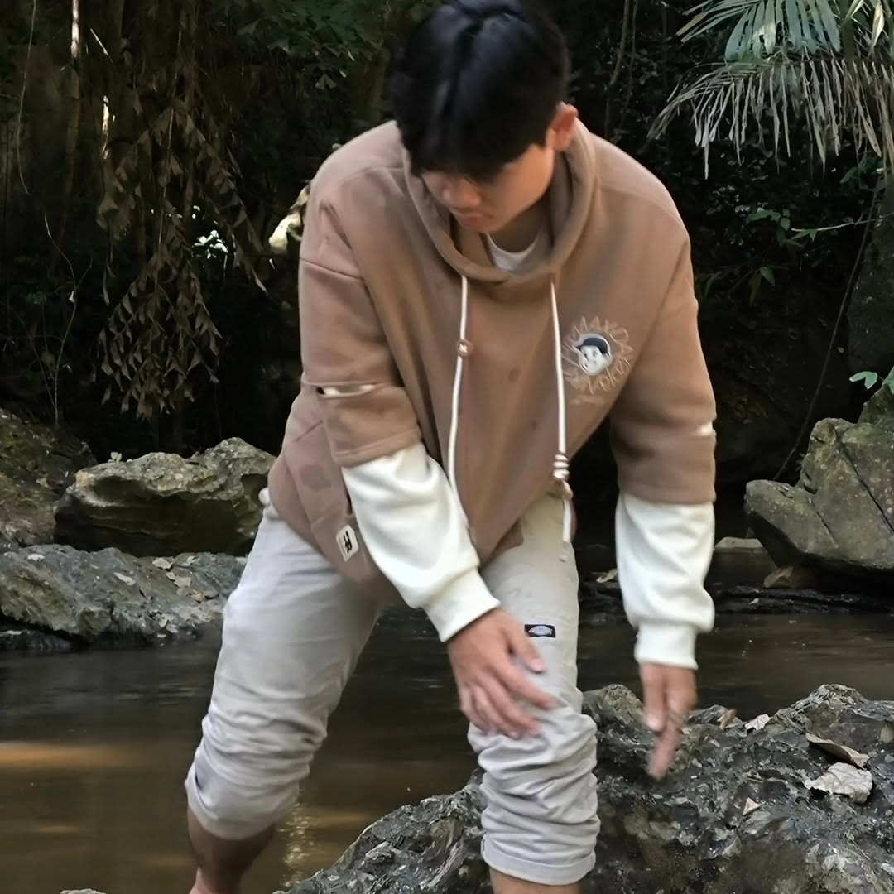

ชื่อ-นามสกุล: DJ FRANK
ชื่อเล่น: AKA GAYFRANK
สาขาวิชา: DIT
กลุ่มเรียน (Section): 01

ผมต้องการเรียนรู้การพัฒนาเว็บไซต์อย่างครบวงจร ทั้งในส่วนของ Front-end และ Back-end เพื่อให้สามารถสร้างเว็บไซต์ที่ใช้งานได้จริงด้วยตนเอง
คาดหวังว่าจะสามารถพัฒนาเว็บไซต์ได้ตั้งแต่เริ่มต้น เข้าใจการเชื่อมต่อฐานข้อมูล และสามารถนำความรู้ไปใช้ในการทำงานจริงได้
จุดอ่อนของผมคือการเขียนโปรแกรมเชิงตรรกะที่ซับซ้อน ดังนั้นจึงวางแผนฝึกเขียนโปรแกรมทุกวัน ศึกษาตัวอย่างโค้ดเพิ่มเติม และทำโปรเจกต์เล็ก ๆ เพื่อเพิ่มประสบการณ์
เว็บไซต์ที่ได้รับแรงบันดาลใจ: GitHub